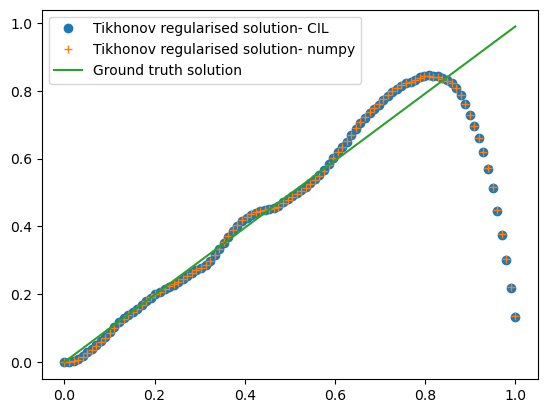
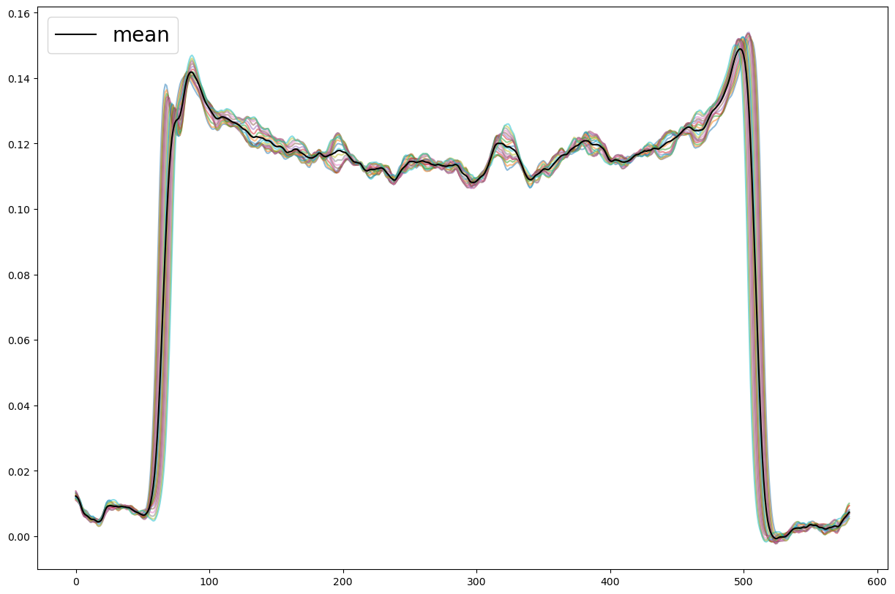
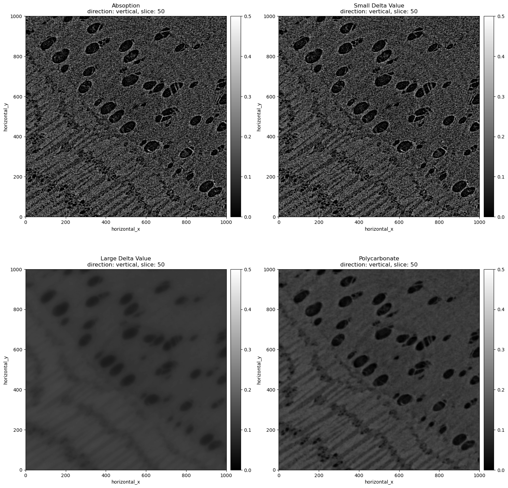
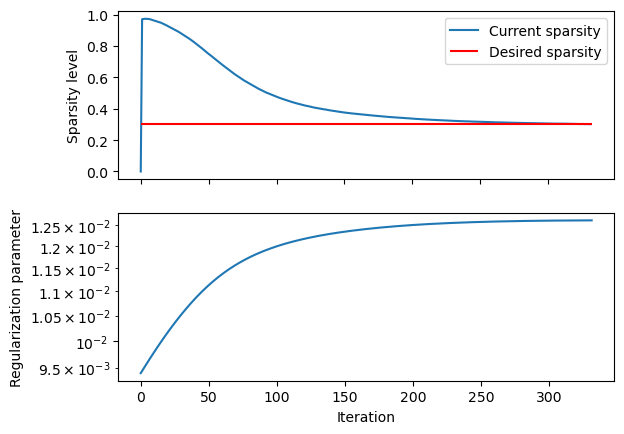
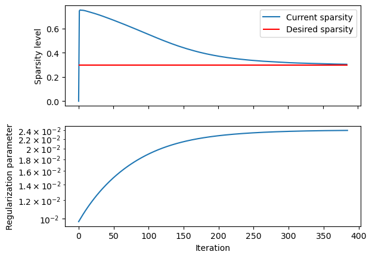
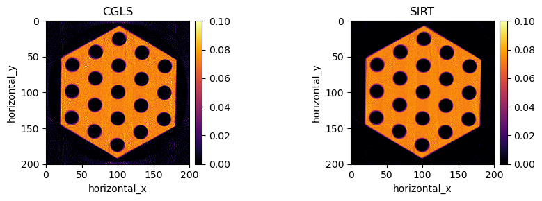
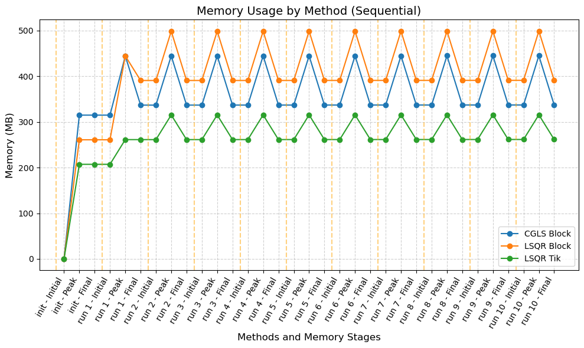
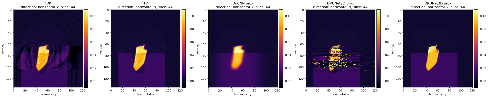

User showcase#
This page contains example notebooks demonstrating how CIL users have solved a variety of interesting problems using CIL tools. Click below to see the rendered notebooks, or access and run the code yourself from https://github.com/TomographicImaging/CIL-User-Showcase/tree/main
Note: each notebook has been tested on a specified version of CIL and is not guaranteed to run on the latest CIL release

Multibang Regularisation in CIL

Showcase of the algorithms for deblurring and denoising

1D inverse problem demo using deriv2 from regtools

TV-regularized reconstruction of the dynamix STEMPO dataset in CIL

Dynamic MR Reconstruction

a gVXR data reader for CIL

Reconstruction and regularisation for a hyperspectral dataset

Comparison between the Least Square and the Weighted Least Square and the Kullback Leibler Divergence

Cone-beam offset reconstruction

microCT reconstruction with Bruker data

Exciscope Polaris phase contrast reconstruction with CIL

Controlled Wavelet Sparsity using callbacks (2D data)

Controlled Wavelet Sparsity using callbacks (3D data)

CIL User Showcase 13: Anisotropic Regularization for FILD Measurements using CIL

Simulation using gVXR and CPU reconstruction using CIL of a twisted hexagonal object with helical flow channels

Memory and Performance Profiling CIL Algorithms: CGLS vs. LSQR

A CIL-pytorch example using DeepInverse using a pre-trained denoiser in the CIL FISTA algorithm